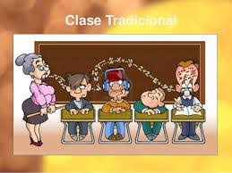

La forma de monitorear e iniciar los procesos de surtido de VAD es con un reporte que se realiza cada 30 minutos durante todo el día aproximadamente en las dos ocasiones que observe como se realizaba este reporte el tiempo de realización fue de 20 minutos.

Se realiza de manera repetitiva un proceso sin buscar automatizarlo
Con ayuda de macros gran parte del trabajo que se realiza de manera repetitiva puede automatizarse. Lo ideal seria construir un sistema en el que se muestren las ventas a distancia y los diferentes estatus en los que se encuentra.
Una gestión optima de un proceso de VAD.
Alinear con comedor la separación de vajilla, así como buscar una alternativa a brindar las tortillas en una bolsa de plástico para disminuir la utilización de este material quizás servilletas de tela y tener una lavadora industrial para poder lavarlas de forma diaria.
La manera natural de capacitación actual es acercar a los nuevos colaboradores con alguien de mas experiencia
Se podría dar el caso que conocimientos se vayan perdiendo de generación en generación, así como las malas o buenas prácticas también son transmitidas de esta manera.
Replicar los entornos de trabajo en experiencias digitales a forma de juegos que brinden capacitación al colaborador de forma interactiva

Al crear estas simulaciones se mapearían a nivel muy detallado los procesos que se siguen en la operación como la utilización de los escáner.
En la creación de estos espacios se debe considerar la experiencia de los colaboradores pues son ellos quienes han realizado la operación de manera diaria y con tanta repetitividad que su experiencia ayudaría al desarrollo de esta idea.